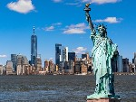
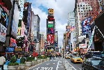

New York is known for all the many people it is home to. With a population of over eight million, New York houses many ethnicities. Take a look at the viberant cultures of New Yokr by visiting Chinatown or Little Italy. Have a taste of meals from all over the world. You could visit three continents by walking down just one street.
New York is infamous for its bright lights. This could be part of the allure for some people but if you move to New York be prepared to get very little sleep. People stay up working on Wall Steet all night. Times Square is just as bright at night as it is during the day. The sights and sounds of the city don't wait for anyone, and definitely not the sun.

The Staute of Liberty, a gift from France, has been welcoming people to America since 1886. It is well known for being a beacon of hope to immigrants going through Ellis Island. If you visit New York be sure to stop by the Statue of Liberty and go inside.

Times Square is one of the most famous locations in New York City. Thousands of people gather to watch the ball drop in Times Square on New Years Eve. It has some of the brightest lights in the city. Broadway runs right through the middle of it so be sure to look around for celebrities and buy tickets to a great show.